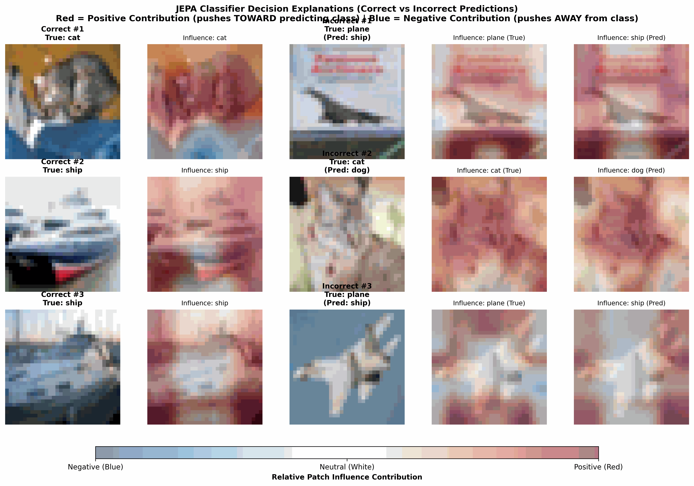
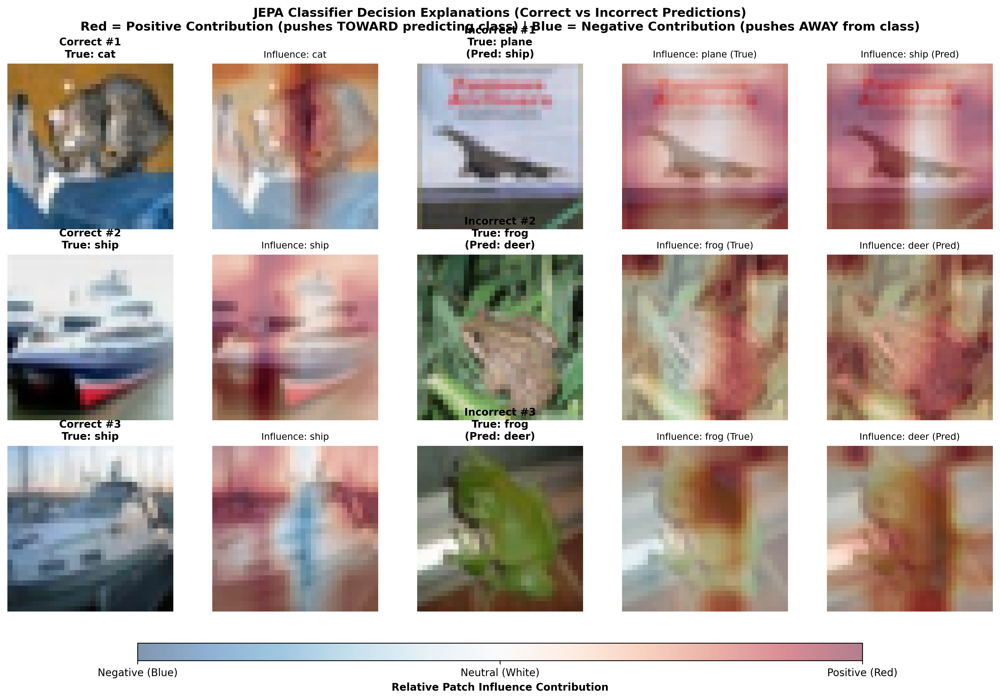
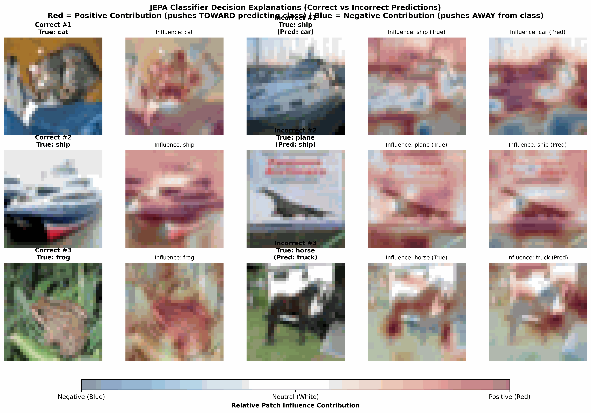

Série I-JEPA — Article 5 : Ouvrir la boîte noire (XAI) Dans cette troisième et dernière partie de notre cinquième article, nous abordons l'explicabilité de la classification. Grâce à la structure mathématique de notre réseau, nous verrons comment calculer sans aucune approximation la contribution exacte de chaque zone de l'image à la décision finale du modèle, permettant d'identifier précisément les biais de classification.
🧮 La linéarité du Global Average Pooling : Une opportunité pour l'XAI
Dans les réseaux de neurones classiques (comme les ResNets avec des couches denses complexes), expliquer pourquoi le modèle a choisi une classe nécessite des méthodes complexes et approximatives (comme Grad-CAM).
Avec notre architecture Vision Transformer (ViT) dotée d'une classification par Global Average Pooling (GAP), nous disposons d'une chance unique : l'explicabilité mathématiquement exacte.
Déroulons les équations :
- Extraction des features : L'encodeur convertit l'image en 64 vecteurs de patches : $f_p \in \mathbb{R}^{D}$ (où $p \in [1..64]$ et $D = 192$).
- Global Average Pooling : Nous calculons la moyenne géométrique de ces patches pour obtenir un unique vecteur d'image : $$\bar{f} = \frac{1}{64} \sum_{p=1}^{64} f_p$$
- Classification Linéaire : Ce vecteur moyen passe dans la tête linéaire
pour calculer le score (logit) de la classe $c$ :
$$L_c = \bar{f} \cdot w_c + b_c$$
où $w_c \in \mathbb{R}^{D}$ correspond aux poids de la classe $c$ de notre tête
linéaire.
En exploitant la distributivité du produit scalaire, nous pouvons réécrire l'équation sous la forme :
$$L_c = \left( \frac{1}{64} \sum_{p=1}^{64} f_p \right) \cdot w_c + b_c = \frac{1}{64} \sum_{p=1}^{64} \left( f_p \cdot w_c \right) + b_c$$
C'est la révélation ! La contribution de chaque patch $p$ à la décision de classer l'image en $c$ est exactement égale au produit scalaire :
$$\text{Contribution}(p, c) = f_p \cdot w_c$$
- Si le produit scalaire est positif ($> 0$), le patch tire activement le modèle vers la classe $c$.
- Si le produit scalaire est négatif ($< 0$), le patch repousse le modèle loin de la classe $c$.
🛠️ Dans les entrailles du code :
jepa_lab/visualize_classification.pyLe calcul de cette contribution exacte est implémenté aux lignes 12-47 du fichier
visualize_classification.py:def compute_influence_heatmap(features, head_weights, target_class): # 1. Sélectionner les poids correspondants à la classe ciblée w_c = head_weights[target_class] # (192,) # 2. Produit scalaire exact pour chaque patch p contributions = torch.matmul(features, w_c) # (64,) # 3. Replacer sur la grille 8x8 contrib_grid = contributions.view(8, 8).numpy() # 4. Interpolation bilinéaire 32x32 pour le rendu contrib_tensor = torch.tensor(contrib_grid).unsqueeze(0).unsqueeze(0) contrib_resized = torch.nn.functional.interpolate( contrib_tensor, size=(32, 32), mode='bilinear' ).squeeze().numpy() # 5. Normalisation relative entre -1 et 1 max_val = np.max(np.abs(contrib_resized)) return contrib_resized / max_val
🔍 Interpréter les cartes d'influence (Rouge / Bleu)
Pour afficher ces résultats, nous utilisons une échelle de couleurs divergente (
RdBu_r) superposée sur l'image d'origine :- Le Rouge Foncé ($+1.0$) représente une influence positive maximale.
- Le Blanc ($0.0$) représente une zone neutre.
- Le Bleu Foncé ($-1.0$) représente une influence négative maximale.

Figure 1 : Cartes d'influence de classification (Rouge = Positif, Bleu = Négatif) pour le classifieur linéaire JEPA Mono-cible.
Figure 2 : Cartes d'influence de classification pour le classifieur linéaire JEPA Multi-cible.
Figure 3 : Cartes d'influence de classification pour le classifieur supervisé Scratch.
Rouge (+1.0) ◄─────────── Blanc (0.0) ───────────► Bleu (-1.0) Pousse vers la classe Neutre Repousse de la classe1. Diagnostiquer les bonnes prédictions (Correct)
Sur les images classées correctement (par exemple, le chat
catou les bateauxshipdans les Figures 1 & 2) :- Pour le chat (
cat), les yeux, la face et le corps de l'animal s'allument en rouge vif (influence positive forte), montrant que le classifieur prend sa décision sur l'animal lui-même et ignore l'arrière-plan. - Pour le bateau (
ship), la coque et la structure centrale du navire concentrent la couleur rouge, prouvant que le modèle extrait les caractéristiques structurelles de l'objet physique et non simplement la présence d'eau.
2. Diagnostiquer et corriger les erreurs (Incorrect)
L'explicabilité exacte devient cruciale pour diagnostiquer les erreurs de prédiction de nos modèles :
- Biais de décor et contexte (Figure 1 - Mono-cible) : Un avion
(
plane) est classé à tort comme un bateau (ship). La carte d'influence de la mauvaise prédiction (ship) montre que les nuages et le ciel entourant l'avion s'allument en rouge vif. Le modèle a confondu la texture des nuages horizontaux avec des vagues ou de l'écume marine. - Confusion sémantique locale (Figure 1 - Mono-cible) : Un chat
(
cat) est classé à tort comme un chien (dog). La carte d'influence de la prédiction incorrecte (dog) met fortement en évidence la région du museau du chat, dont la forme triangulaire en basse résolution ($32\times32$) mime visuellement la truffe d'un chien. - Biais de milieu naturel (Figure 2 - Multi-cible) : Une
grenouille (
frog) est classée par erreur comme un faon/cerf (deer). Si la carte de la classe correcte (frog) isole bien le batracien, celle du prédit (deer) s'allume sur les feuilles et branches végétales environnantes. Le modèle a associé la texture forestière sauvage à la présence d'un cervidé.
🎬 Bilan de l'Article 5 & Perspectives
Dans cet article sur l'explicabilité, nous avons :
- Cartographié l'imagination spatiale du Predictor via les cartes d'attention (Partie 1).
- Démontré l'émergence de concepts sémantiques spontanés (ciel, poils, roues) par clustering (Partie 2).
- Calculé la contribution analytique exacte d'un patch à la classification finale (Partie 3).
Notre JEPA n'est plus une boîte noire obscure, ses mécanismes de décision sont désormais entièrement visibles et quantifiables.
Mais en pratique, si vous entraînez votre propre JEPA et que la perte (Loss) refuse de descendre, ou si votre modèle subit un collapse (effondrement sémantique), que devez-vous faire ? Comment diagnostiquer et réparer votre réseau ?
C'est ce que nous allons voir dans notre dernier article de la série : Article 6 : Le Guide du Praticien — Diagnostiquer, Corriger et Améliorer son modèle JEPA !
🛠️ Défi curieux n°3
Le procès des indices célestes (Explicabilité par GAP) : Imaginez qu'un détective (notre classifieur linéaire) doive juger si une photo contient un avion ou un bateau. Il examine chaque indice (chaque patch) indépendamment et attribue des points à charge (influence positive) ou à décharge (influence négative) pour chaque classe suspecte.
1. Si le détective commet l'erreur de classer un bateau comme un avion en raison de la présence de ciel bleu en arrière-plan, comment s'appelle ce type de biais en Machine Learning ?
2. Pourquoi la linéarité du Global Average Pooling (GAP) nous permet-elle de calculer la contribution exacte d'un patch sans avoir à recourir à des approximations heuristiques (comme Grad-CAM) ?